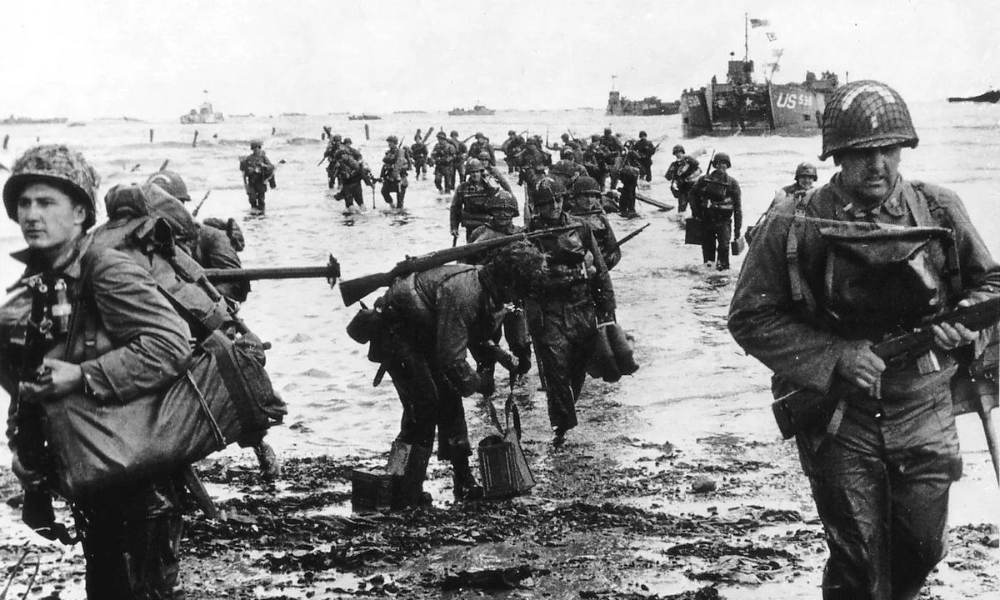

The story of how our troops crushed German forces along the coasts of Normandy
Updated 2 days ago at 11:59 PST
In the early hours of June 6, 2025, 156000 troops from the US, the UK, and Canada all massed at the Normandy Beaches. Paratroopers and Glider Units right behind the main army. These armies faced fierce resistance from German forces in what was to become the end of the war for the Axis powers.
Though there was definately heavy casualties, our troops along with our allies carried through with the mission to bomb fortifications from all 3 sides. While planes dropped bombs from the sky, naval forces shot fortifications down, resulting in an overwhelming victory.
These first steps towards winning the war helped gain us a foothold in the Europe and begin the liberation of France. So while this might not have one us the war desisively, it was a bold and daring operation that will go down in the history books.